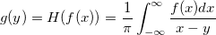
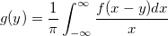
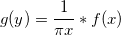
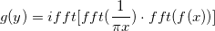
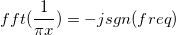
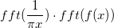

ヒルベルト変換が次式で定義されることを思い出して下さい。

数式の形を下記のように変更することができます。

これはHilbert変換がコンボリューションとして表示できることを示しています。

そのため、ヒルベルト変換を計算するためにコンボリューションの理論に基づく高速アルゴリズムを使用することができます。アルゴリスムは次のように表すことができます。

ここで fft() は、高速フーリエ変換の演算子で、ifft() は、逆高速フーリエ変換の演算子を表します。
次のことが分かっています。

ここで freq は周波数、 sgn() はsin関数です。そのため、積

は、入力信号のフーリエ変換の特殊フィルタリングとして計算できます。フィルタリングにより、正の周波数で位相のずれ90度、負の周波数で位相のずれ90度が起こることにで周波数成分が変わります。振幅は不変のままです。積の逆フーリエ変換を適用することで、入力データのヒルベルト変換を得ることができます。Hilbert変換を計算した後、分析信号はその定義式から派生することができます。